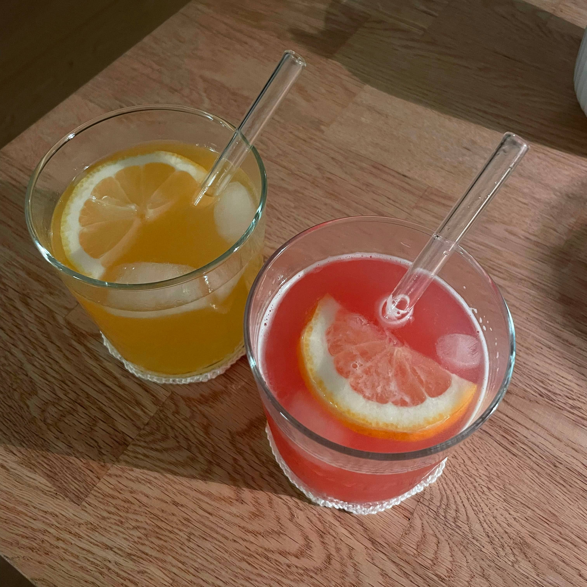

Udforsk
Velkommen til Udforsk! Her kan du finde nye opskrifter, inspiration fra andre eller dele dine egne kreationer med verden!
Alberte fra København skriver
"Hej alle! Jeg har lavet en drink, som jeg kalder 'Tropisk Pink Dream', og jeg er vild med den! Jeg startede med at bruge pink gin, citron og guava sodavand, men så prøvede jeg også med mango sodavand, og begge versioner smager mega godt! Det er den perfekte blanding af friskhed, sødme og tropiske vibes. Den er så lækker, at jeg bare måtte dele den med jer. Skål, og prøv den selv - jeg lover, I bliver hooked!"
Prøv Albertes opskrift her!
